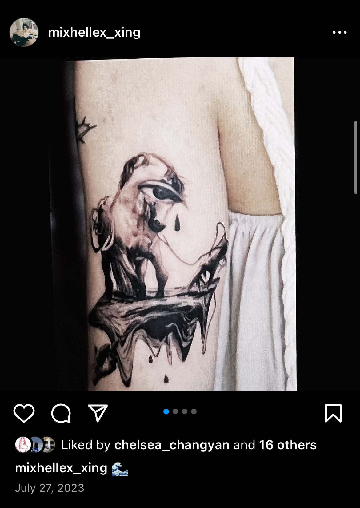
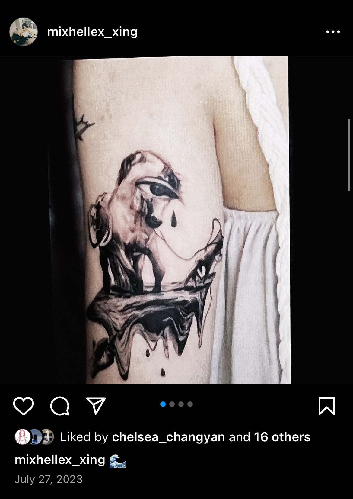
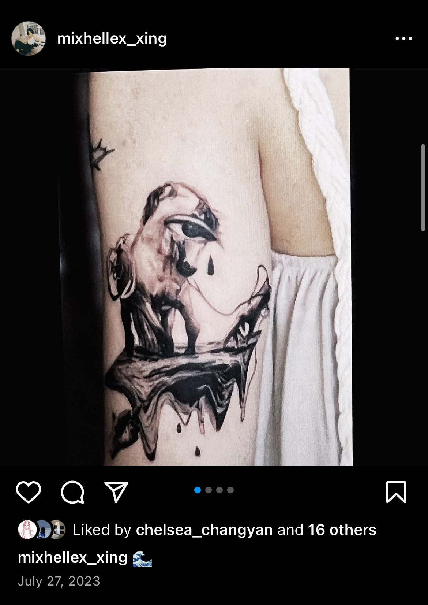

I know there's a good chance you won't notice me
and this could just be an accident.
What made you see me? The shiny, the beautiful.
Everyone passes by and doesn't think there's anything else here,
so I try to be honest here.
Curiosity led you to me? I guess so.
Who am I?
It's the person who sent these photos,
the person I want you to see in those photos and the person who is typing this,
someone so ordinary that you might not even remember disappearing into the crowd.
I go through the same routine day after day,
going to class, cooking, washing, completing daily school and life tasks,
and then falling asleep in the fragmented flow of information on the Internet.
Pretty boring, right?
But it is the normal life.
It felt like I was creating another version of myself.
I was weaving all the good things that happened in my life into her life.
Every time I sent out a post or story, her life moved forward a little bit,
and other times it just stopped there, waiting to be updated.
I am not a person who updates very often, so I feel a little sorry for her.
People often avoid talking about themselves on the Internet,
saying that they should pay attention to privacy, and don't want to start an argument,
so they choose not to mention things about themselves.
But have you seen other people's memos?
Or those posts that are set to private mode?
I think that's where people get closer to who they really are.
